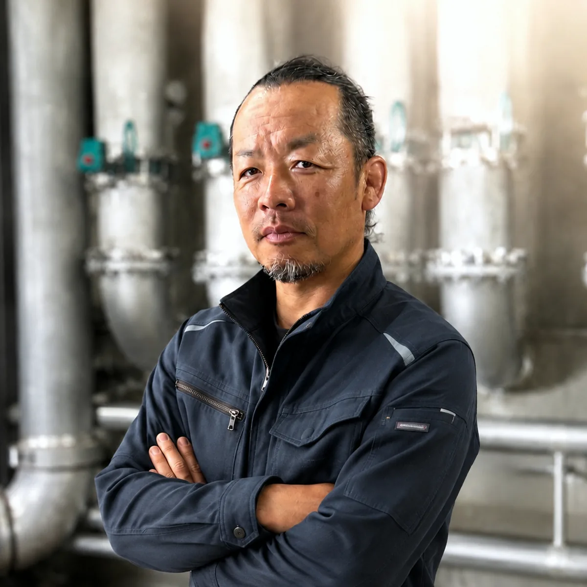
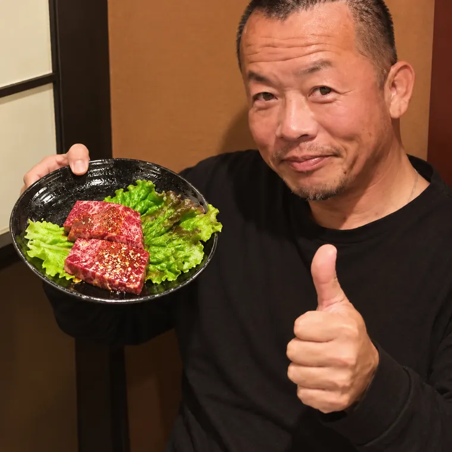

 藤井冷熱熱絶縁工事（保温・断熱・板金）
藤井冷熱熱絶縁工事（保温・断熱・板金）
代表
藤井 築路フジイ チクミチ
保温・断熱ひとすじ 40 年
「お客様が求めている以上のものに仕上げる。
それが、40年変わらない基準です。」
品質とスピード。どちらも落としません。
早く仕上げるだけでは足りません。かといって、丁寧なだけで工期を延ばすのも違う。段取りを組み、その日のスケジュールを管理する。そこができて、はじめて両方が成り立ちます。
人の目につく場所ほど、細部にこだわります。
施工が早いだけでは、いい仕事とは言えません。見た目まで整えて、はじめて仕上げたことになる。曲がり、分岐、バルブまわり。形が複雑なところほど、腕の差がそのまま出ます。
お客様が求めているものを、
そのまま形にするだけでは足りません。
求めている以上のものに仕上げる。
40年、そこを基準にやってきました。
休みの日は、体を動かすか、家族と過ごすか。
ゴルフ ツーリング 
仕事は大事です。ただ、忙しすぎて休みの日は家で寝ているだけ。それでは本末転倒だと思っています。
遊ぶ予定があるから、平日の段取りにも身が入る。仕事もプライベートも、どちらも大事にしてほしい。
人生を楽しんでください。その気持ちを持ったまま働ける仲間を、探しています。
Your future
あなたは、
どんな未来を目指したい？
決められた一つの働き方に、全員を当てはめることはしていません。得意なことも、生活も、目標も、人によって違うからです。まずは、近いと思うものを一つ選んでみてください。
技術を磨いて、
しっかり稼ぎたい
せっかく職人になるなら、誰にも負けない技術を身につけたい。頑張った分だけ、収入も上げていきたい。
- 基礎 → できる仕事を増やす → 資格 → 現場を任される
- 勤続年数で自動的に上がる仕組みではありません
- 技術が伸び、任される範囲と貢献が広がれば、収入も上がります
自分の時間・
副業と両立したい
副業を続けながら働きたい。週5ではなく週4くらいで働きたい。仕事だけじゃなく、自分の時間も大切にしたい。
- 副業は可能です。続けたい仕事があれば、そのまま続けてください
- 勤務日数もご相談ください。週4という選択肢もあります
- ただし、決めた勤務日と任された役割には責任を持ってもらいます
職人をしながら、
可能性にも挑戦したい
職人として働きながら、自分の得意なことにも挑戦してみたい。現場以外の仕事にも関わってみたい。
- 動画・SNS・広報・アプリ・IT・営業・教育・採用・事務
- 希望すれば何でも任せる、という意味ではありません
- 本人の強み × 目標 × 会社に必要なことが重なる場所を探します
この3つだけが、正解ではありません。
あなたは、どんな未来をつくりたいですか？
Goal ／ 目標を一緒に立てる
決めて終わり、に
しません。
働いて、給料をもらって、毎年同じことを繰り返すだけ。そういう職場にはしません。「1年後どうなっていたい？」から一緒に考えて、そこへ向かう道を一緒に決めます。
1年後どうなっていたいか。収入か、技術か、時間か、新しい挑戦か。まずそこから聞かせてください。
そのために今年何を覚えるか。どの資格を取るか。何を任されるようになるか。具体的なところまで落とします。
1年先は遠いので、今月何をするかまで分けます。日々の仕事が目標につながっている状態をつくります。
今どこまで来たか。次は何を目指すか。目標は変わっていないか。一緒に確認します。
途中で目標が変わっても構いません。 働いてみて「人を教えるほうが得意だった」「営業が向いていた」と気づくことはよくあります。最初に決めた道を一生歩く必要はありません。
Our future
会社の未来と、
あなたの未来を、一緒に。
技術力のある保温会社へ。
三代続いてきた保温の技術を、さらに磨いていきます。品質、技術、教育、人材。「保温業界で藤井冷熱を知らない人はいない」と言われるところまで行きます。
そこへ届くには、一緒に働く人の力が要ります。
人生・働き方・挑戦。
もっと稼ぎたい。手に職をつけたい。家族との時間を増やしたい。副業と両立したい。人をまとめてみたい。ITや動画に挑戦したい。いつか独立したい。
どれも、会社の目標と同じくらい大事なことです。
技術が得意な人は技術で、まとめるのが得意な人は管理で、教えるのが得意な人は教育で、ITが得意な人はITで、会社を強くしてほしい。
その結果として、働く全員が「藤井冷熱にいて良かった」と言える会社にします。
Contact
まだ、入社を
決めていなくて大丈夫です。
まずは藤井冷熱の仕事と雰囲気を見てみませんか。これからどうなりたいか、聞かせてください。そこから一緒に考えます。
見学だけ、話を聞くだけでも構いません。仕事の中身も、給与の考え方も、直接聞いてもらうのが一番早いはずです。